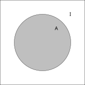
2 Probabilità elementare
In questo capitolo introduciamo la probabilità come calcolo del grado di fiducia circa la validità di una affermazione, sulla base di informazione parziale.
Nella Sezione 2.1, introduciamo il concetto intuitivo di probabilità dal punto di vista soggettivo.
Nella Sezione 2.2 affrontiamo la prima regola di calcolo fondamentale (regola della somma, o additività) e alcune semplici conseguenze.
Nella Sezione 2.3 introduciamo il concetto fondamentale di sistema di alternative (finito) e di densità discreta ad esso associata.
Nella Sezione 2.4 presentiamo la seconda regola di calcolo fondamentale (regola del prodotto o della probabilità composta) e alcune conseguenze.
La Sezione 2.5 si occupa dell’analisi di problemi probabilistici elementari tramite diagrammi ad albero. Si introduce in particolare il modello delle estrazioni da un’urna (senza rimpiazzo).
La breve, ma importantissima, Sezione 2.6 è dedicata la deduzione della formula di Bayes, uno degli strumenti chiave del calcolo delle probabilità.
La Sezione 2.7 mostra come la formula di Bayes fornisca un metodo generale (detto appunto Bayesiano) per approcciare semplici problemi di inferenza statistica, in particolare per stimare la plausibilità di un’ipotesi sulla base di dati osservati. Introduciamo anche il metodo di massima verosimiglianza, come semplice ma spesso efficace stima dell’ipotesi più probabile.
Nella Sezione 2.8 definiamo l’indipendenza probabilistica tra due o più eventi: per esperienza, questo concetto è particolarmente insidioso e quindi viene presentato e discusso in modo dettagliato, accompagnandolo con il modello delle estrazioni da un’urna (con rimpiazzo).
Nella Sezione 2.9, accenniamo alla formalizzazione assiomatica della probabilità proposta da Kolmogorov, estremamente importante per la dimostrazione di risultati teorici, in particolare teoremi limite, ma sicuramente meno per i fini modellistico-computazionali.
2.1 Cos’è la probabilità?
Mentre le regole di calcolo della probabilità sono universalmente accettate e usate in vari ambiti scientifici, vi sono diverse scuole di pensiero relative all’interpretazione della probabilità stessa e delle sue applicazioni. Senza entrare nei dettagli della questione, in questo corso adottiamo un’interpretazione soggettiva perché ci permetterà di ottenere risultati applicabili in contesti più vari (rispetto all’intepretazione frequentista).
La probabilità misura il grado di fiducia che un soggetto attribuisce alla validità di una affermazione, avendo a disposizione una informazione parziale (che in generale non permette di dedurre la verità o la falsità dell’affermazione).
Teniamo presente che, quando consideriamo un soggetto e il grado di fiducia che attribuisce ad un’affermazione, non siamo in realtà interessati ad una persona o ad un gruppo di persone specifiche (sarebbe piuttosto campo di indagine della psicologia o della sociologia), quanto piuttosto ad una idealizzazione di una intelligenza razionale, come potrebbe essere un essere umano (de-)privato di tutte le emozioni, gli istinti, ecc. Si tratta dello stesso procedimento che interviene nello studio della logica matematica, come astrazione del ragionamento deduttivo. Come per la logica, i risultati che si ottengono tramite il calcolo delle probabilità sono ovviamente utili anche per lo studio di problemi reali, che possono riguardare intelligenze umane o artificiali.
Osservazione. Una delle difficoltà dovute all’intepretazione soggettiva della probabilità, anche nello svolgimento degli esercizi, è proprio nel mantenere un grado di separazione con il soggetto astratto cui è richiesto di determinare una probabilità sulla base di una certa informazione. La nostra intuizione, allenata dal buon senso e dall’esperienza, in molti casi ci suggerisce una risposta senza però fornirci un percorso per giustificarla completamente. Il calcolo delle probabilità diventa quindi un modo per programmare il soggetto razionale a risolvere dei problemi – anche se noi stessi in certi casi ne sappiamo intuitivamente già dare una soluzione. Per aiutarci in questa separazione di ruoli, conveniamo in questo corso di introdurre un personaggio fittizio, corrispondente a questo soggetto razionale del tutto ideale, che chiameremo il robot, come nella monografia di E.T. Jaynes, Probability Theory The Logic of Science, un testo consigliato per chi voglia approfondire gli aspetti del calcolo delle probabilità come logica dell’incertezza.
Date queste premesse, il calcolo della probabilità può essere quindi posto come il seguente problema generale, che affronteremo in tutto questro corso in molteplici contesti particolari: assegnate al robot
- una informazione, che indichiamo con \(I\), nota e ritenuta vera (dal robot),
- una affermazione, che indichiamo con \(A\), che nella realtà può essere solo vera oppure falsa (senza ambiguità),
è richiesto al robot di misurare il grado di incertezza circa la validità di \(A\), sulla base di tutta e sola l’informazione \(I\), nel modo più razionale possibile.
Tale misura, detta la probabilità di \(A\) sapendo \(I\) (o nota \(I\), o anche condizionata ad \(I\)) deve essere un numero reale compreso tra \(0\) e \(1\), e si indica con la notazione \[ P(A | I).\]
Sicuramente avrete incontrato esempi di probabilità associate a giochi come lanci di dadi, monete, oppure estrazioni di carte. Queste applicazioni storicamente motivarono i primi studi sulla probabilità, ma pensare alla probabilità solo in questi termini al giorno d’oggi è estremamente riduttivo. Ecco due esempi di problemi reali in cui il calcolo delle probabilità fornisce degli strumenti molto importanti (ovviamente poi non è l’unico ingrediente per la loro risoluzione).
Potremmo chiedere al robot di valutare se “oggi pioverà a Pisa” (affermazione \(A\)) sapendo che “oggi è nuvoloso” (informazione nota \(I\)). Le previsioni meteorologiche ovviamente non si basano sulla banale informazione \(I\) sopra, bensì sul numerosissime misurazioni di quantità fisiche e calcoli numerici su specifici modelli. Il calcolo delle probabilità gioca un ruolo importante per quantificare l’incertezza associata al risultato (la previsione) fornito.
Data una immagine (informazione nota \(I\)), potremmo chiedere al robot di valutare se essa “rappresenti un volto umano” (\(A\)). Questo è un problema che noi esseri umani risolviamo in pochissimo tempo (appoggiandoci sulla lunga storia della nostra evoluzione). Dare una risposta automatizzata a questo e simili questioni di classificazione, pochi anni fa era considerato fantascienza, mentre oggi è un compito alla portata di uno smartphone. Tra vari aspetti che hanno permesso questo sviluppo, un punto di svolta è stata l’introduzione di opportuni modelli matematici, anche basati sul calcolo delle probabilità, in modo da “insegnare” al robot come rispondere sulla base dell’informazione contenuta in grandissime raccolte di immagini classificate (un po’ come nei modelli metereologici, la vera informazione nota \(I\) è quindi molto di più della singola immagine fornita al robot).
In questo corso ovviamente non ci occuperemo di problemi così specifici e gli esempi che tratteremo saranno forse meno affascinanti. Lo scopo però è di fornire un linguaggio e gli strumenti matematici opportuni anche per avvicinarsi a queste ed altre questioni, estremamente rilevanti ai fini pratici.
Introduciamo ora alcuni termini tecnici propri del calcolo delle probabilità.
Se \(P(A|I) = 1\), significa che \(A\) è ritenuta dal robot praticamente vera (si dice tecnicamente quasi certa), mentre se \(P(A|I) = 0\), significa l’opposto, ossia ritenuta praticamente falsa, e si dice allora che \(A\) è trascurabile (condizionatamente ad \(I\)).
Si usa il termine generico evento per indicare le affermazioni che si considerano nel calcolo, come \(A\) o anche l’informazione nota \(I\) (che pure possiamo pensare come un’affermazione). Si usa dire anche che l’evento \(A\) si realizza per affermare che \(A\) è vero. Questo perché storicamente il calcolo della probabilità riguardava affermazioni su fatti legati al gioco d’azzardo, come ad esempio il lancio di un dado o l’estrazione del lotto. Anche noi useremo questo termine, ma spesso accompagnandolo con sinonimi meno tecnici e in certi casi più evocativi, come affermazione o informazione.
Le operazioni logiche elementari tra affermazioni saranno usate di continuo e adotteremo varie notazioni.
Per indicare la negazione di una affermazione \(A\), ossia l’affermazione che è vera se e solo se \(A\) è falsa, scriveremo “non \(A\)” oppure la notazione insiemistica per il complementare \(A^c\).
Per la congiunzione logica tra \(A\) e \(B\), ossia l’affermazione che è vera se e solo se \(A\), \(B\) sono entrambe vere, scriviamo “\(A\) e \(B\)” oppure semplicemente \(A,B\) (con la virgola) oppure la notazione insiemistica per l’intersezione \(A\cap B\).
Infine, per la disgiunzione (inclusiva) tra \(A\) e \(B\), ossia l’affermazione che è vera se e solo se almeno una tra \(A\), \(B\) è vera, scriviamo “\(A\) oppure \(B\)”, “\(A\) o \(B\)”, o useremo la notazione insiemistica per l’unione \(A \cup B\).
Sempre a proposito di notazione, per alleggerire formule altrimenti pesanti, spesso l’informazione nota al robot (che abbiamo indicato con \(I\), ma ovviamente può cambiare) è sottointesa, specialmente se non ci sono ambiguità, e scriveremo solamente \[ P(A) \quad \text{ al posto di } \quad P(A|I).\]
Osservazione. Questa notazione semplificata tuttavia non deve trarre in inganno: tutte le probabilità sono sempre condizionate ad una informazione nota \(I\), magari anche estremamente banale. Il suo ruolo è analogo a quello delle ipotesi in un teorema, mentre quello di \(A\) è simile a quello della tesi, quindi entrambi fondamentali! Spesso negli esercizi di probabilità si sottovaluta o misintepreta l’informazione presentata nel testo (che va a definire l’informazione \(I\)), facendo di fatto calcolare al robot delle probabilità diverse da quelle richieste.
Il nostro obiettivo, nelle prossime sezioni, sarà di introdurre delle regole di calcolo per la probabilità, in un certo senso analoghe a quelle della logica, ma diverse e, come vedremo, più flessibili. Ridurremo tutto a due regole fondamentali, dette brevemente della somma e del prodotto. Non ci occuperemo troppo di giustificarle, quanto piuttosto di mostrare come da esse seguano le altre regole utili che permettono di calcolare probabilità per risolvere problemi (anche se elementari) in modo efficace.
Prima di vedere tali regole, osserviamo le seguente proprietà di monotonia della probabilità, semplice ma a volte sfuggevole1.
Date due affermazioni \(A\) e \(B\) e l’informazione nota \(I\), se \(A\) è vera in qualsiasi situazione in cui \(B\) sia vera (supponendo sempre vera \(I\)), allora vale \[ P(B | I ) \le P(A | I ).\]
Alternativamente, la condizione “\(A\) è vera ogni volta che \(B\) lo è” si può formulare come “l’implicazione logica \(B \to A\) è vera” (supponendo vera \(I\)). Il caso più semplice è quando \(B\) sia ottenuta come la congiunzione di \(A\) e un’altra affermazione, ad esempio \(A\) è “oggi piove”, \(B\) è “oggi piove e porto l’ombrello”.
Osservazione. Per visualizzare la proprietà di monotonia e le successive regole di calcolo, introduciamo la rappresentazione grafica a diagrammi di Eulero-Venn degli eventi, ossia delle affermazioni e dell’informazione nota. Precisamente, possiamo pensare l’informazione nota al robot \(I\) come un universo, rappresentato tramite un riquadro, in cui tutte le altre affermazioni sono contenute. Tradizionalmente, i diagrammi rappresentano insiemi, mentre in questo caso sono affermazioni: sarà sufficiente pensare agli ipotetici elementi contenuti in questi diagrammi come alle possibili situazioni in cui l’affermazione è vera (in termini probabilistici, l’evento si realizza). Questo è in linea con la descrizione assiomatica di Kolmogorov, cui si accenna nella Sezione 2.9. Comunque, eccetto per problemi estremamente semplici, i diagrammi di Eulero-Venn non sono molto pratici, e li abbandoneremo presto per rappresentazioni più utili, come i diagrammi ad albero e le reti bayesiane.
Qualitativamente, la probabilità di \(A\) è associata all’area del suo diagramma: tanto più esteso, maggiore sarà la sua probabilità, fino al caso in cui \(A\) copra tutto l’universo \(I\), ossia \(A\) è quasi certo, \(P(A|I)=1\). D’altra parte, se \(A\) è trascurabile, \(P(A|I)=0\), possiamo rappresentare \(A\) così piccolo da evitare del tutto di disegnarlo – precisamente il diagramma vuoto corrisponde ad una affermazione trascurabile, sapendo \(I\).
Le operazioni logiche di congiunzione (e) e disgiunzione inclusiva (oppure) corrispondono rispettivamente all’intersezione e all’unione tra i diagrammi. La negazione (non) corrisponde al complementare (relativamente all’universo \(I\)), mentre la condizione che implica la monotonia della probabilità, ossia “\(A\) è vera ogni volta che \(B\) lo è” corrisponde all’inclusione tra i diagrammi.
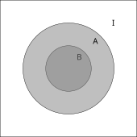
2.1.1 Esercizi
Disegnare il diagramma di Venn associato all’affermazione “non (\(A\) e \(B\))” e verificare che coincide con quello di “(non \(A\)) o (non \(B\))” (regola di De Morgan).
Fornire un esempio concreto di affermazioni \(A\), \(B\) ed \(I\) in cui è intuitivamente chiaro che \(P(A|I) \le P(A|I\cap B)\) e uno in cui all’opposto \(P(A|I) \ge P(A|I \cap B)\).
2.2 Regola della somma
La prima regola del calcolo delle probabilità riguarda la disgiunzione logica tra due affermazioni.
Date affermazioni \(A\), \(B\) e l’informazione nota \(I\), se \(A\) e \(B\) non possono in nessun caso essere entrambe vere (supponendo \(I\) vera), allora vale \[ P( A \text{ oppure } B | I ) = P(A | I )+ P(B|I). \]
Due affermazioni \(A\) e \(B\) come sopra vengono dette incompatibili (o mutuamente esclusive), proprio perché la validità di una esclude l’altra. Equivalentemente, possiamo anche dire che l’affermazione “\(A\) e \(B\)” è trascurabile rispetto all’informazione \(I\), ossia \(P( A,B | I ) = 0\). Con la rappresentazione in diagrammi, notiamo che la condizione di incompatibilità corrisponde al fatto che i diagrammi siano ben separati (il termine insemistico è disgiunti), e la regola della somma corrisponde al fatto che l’area dell’unione dei diagrammi sia la somma delle aree.
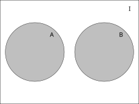
L’esempio più semplice di eventi incompatibili si ottiene ponendo \(B\) come la negazione di \(A\) ossia \(B=\) “non \(A\)”. Siccome “\(A\) oppure \(B\)” è così sicuramente vera (qualsiasi sia l’informazione \(I\), che quindi omettiamo), ne deduciamo che \[ 1 = P( \text{ $A$ oppure non $A$} ) = P(A)+ P(\text{non $A$}),\] ossia \[ P(\text{non $A$}) = 1 - P(A).\]
Nel caso di affermazioni \(A\), \(B\) non incompatibili, si ottiene una formula leggermente più complicata, a volte utile.
Per \(A\) e \(B\) affermazioni (non necessariamente incompatibili) vale \[ P(\text{$A$ oppure $B$} ) = P(A )+ P(B) - P(\text{$A$ e $B$} ), \tag{2.1}\] dove per brevità omettiamo di specificare l’informazione nota \(I\).
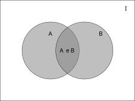
Dimostrazione. Infatti, l’affermazione “\(A\) oppure \(B\)” si può equivalentemente pensare come “\(A\) oppure (\(B\) e non \(A\))”, nel senso che una è vera se e solo se l’altra è vera: perciò il grado di fiducia attribuito deve essere lo stesso (altrimenti il robot non sarebbe davvero razionale). Ma nella riformulazione, le due affermazioni \(A\) e “\(B\) e non \(A\)” sono incompatibili. Ne segue che \[ P(\text{$A$ oppure $B$} ) = P(A) + P(\text{$B$ e non $A$}).\] Analogamente, scambiando i ruoli di \(A\) e \(B\) segue che \[ P(B) = P(\text{$B$ e $A$}) + P(\text{$B$ e non $A$}),\] e sottraendo le due identità otteniamo la Equazione 2.1.
2.2.1 Esercizi
Mostrare la seguente regola della somma generalizzata a tre eventi \(A\), \(B\), \(C\) qualsiasi (non necessariamente incompatibili): \[ P( \text{$A$ oppure $B$ oppure $C$}) = P(A)+P(B)+P(C) - P(A,B)-P(A,C)-P(B,C) + P(A,B,C).\]
Dedurre la proprietà di monotonia dalla regola della somma.
2.3 Sistemi di alternative
Una ulteriore conseguenza della regola della somma riguarda l’estensione al caso di \(n\) affermazioni \(A_1\), \(A_2\), …, \(A_n\). Diciamo che esse sono a due a due incompatibili tra loro se per ciascuna coppia \(A_i\), \(A_j\) con \(i \neq j\), esse sono incompatibili, ossia “\(A_i\) e \(A_j\)” è trascurabile (rispetto all’informazione nota \(I\)). Ragionando sulla regola della somma e usando l’induzione matematica, si ottiene che per l’affermazione “almeno una tra le \(A_i\) è vera”, ossia “\(A_1\) oppure \(A_2\) oppure … \(A_n\)”, vale \[P( \text{almeno una tra le $A_i$ è vera} | I) = P(A_1|I)+ \ldots + P(A_n|I) = \sum_{i=1}^n P(A_i|I).\]
Esempio 2.1 Si consideri il lancio di un dado a sei facce e per ogni \(i \in \cur{1, \ldots, 6}\), si ponga \(A_i\) l’affermazione “esce la faccia \(i\)”. Allora vale \[ P( \text{esce una faccia pari}) = P(\text{una tra $A_2$, $A_4$ o $A_6$ è vera}) = P(A_2)+P(A_4)+P(A_6).\]
Date affermazioni \(A_i\) a due a due incompatibili, non necessariamente una di esse deve essere sempre vera, ma se questo è il caso (come nell’esempio sopra per \(i=\cur{1,2,3,4,5,6}\)) allora una e una sola tra le \(A_i\) è necessariamente vera (ma spesso il robot di solito non sa quale sia). Ne segue che \[1 = P( \text{una tra le $A_i$ è vera} ) = \sum_{i=1}^n P(A_i).\] In questa situazione, le \((A_i)_{i=1}^n\) sono dette un sistema di alternative.
Un sistema di alternative (rispetto ad una informazione \(I\)) è una famiglia \((A_i)_{i=1}^n\) di affermazioni (dette alternative)
- a due a due incompatibili (o mutuamente esclusive) e
- tali che almeno una tra loro è sicuramente vera.
In breve, una e una sola tra le alternative è sicuramente vera (nota \(I\)).
Osservazione. In questo capitolo ci limiteremo a sistemi con un numero \(n\) finito di alternative. In seguito, considereremo sistemi infiniti, ma useremo un linguaggio più adatto a trattarli, quello delle variabili aleatorie.
Ad un’affermazione \(A\), si può sempre associare il sistema di alternative costituito da \(A\) e la sua negazione “non \(A\)”.
Rappresentato in diagrammi, un sistema di alternative corrisponde ad una partizione dell’universo \(I\).
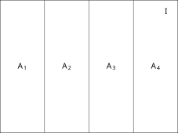
I sistemi di alternative sono uno degli strumenti fondamentali per risolvere i problemi elementari di probabilità, in particolare per decomporre (analizzare) un problema complesso in una famiglia di sotto-problemi più semplici da trattare. Vale infatti la seguente generalizzazione della regola della somma (la cui deduzione è lasciata per esercizio).
Sia \((A_i)_{i=1}^n\) un sistema di alternative (rispetto all’informazione \(I\)) e sia \(B\) una (qualsiasi) affermazione. Allora si può decomporre \[ P(B|I) = P(\text{$B$ e $A_1$}|I)+ \ldots + P(\text{$B$ e $A_n$}|I).\]
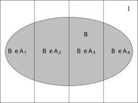
2.3.1 Densità discreta
Ad un sistema di alternative \((A_i)_{i=1}^n\) (rispetto all’informazione \(I\)) possiamo associare la collezione delle probabilità \[ \bra{P(A_i|I)}_{i=1}^n.\] Come conseguenza della regola della somma, ciascuna \(p_i := P(A_i|I)\) è un numero compreso tra \(0\) ed \(1\) ed inoltre vale \[ \sum_{i=1}^n p_i = 1.\] Una tale famiglia di numeri è detta densità discreta di probabilità. A ogni sistema di alternative è quindi associata una densità discreta (rispetto ad una informazione nota \(I\)).
Data una qualsiasi funzione \(i \mapsto f(i)\), definita per \(i\in\cur{1, \ldots, n}\), a valori non-negativi (e non identicamente nulla), si può associare una e una sola densità discreta proporzionale ad \(f\), ossia tale che \[ p_i = c f(i) \quad \text{per ogni $i \in \cur{1, \ldots, n}$,}\] per una costante moltiplicativa \(c>0\) (che non dipenda da \(i\)). Imponendo infatti che la somma delle \(p_i\) sia uno, si trova il valore \[c = \bra{ \sum_{i=1}^n f(i)}^{-1}.\] Sfruttando questo fatto, è molto comodo spesso definire una densità discreta a meno di costante moltiplicativa, e si scrive di solito \[ p_i \propto f(i),\] (si legge “\(p_i\) è proporzionale ad \(f(i)\)”).
Alcune densità discrete si presentano più frequentemente di altre, e sono state storicamente classificate, spesso attribuendo ad esse il nome di chi le ha studiate per primo, o più a fondo (purtroppo tale scelta ne rende un po’ difficile e noiosa la memorizzazione). Introduciamo due esempi fondamentali, altre verranno discusse in seguito.
Supponendo di avere \(n\) alternative \((A_i)_{i=1}^n\), la densità uniforme è il caso in cui tutte le probabilità siano uguali tra loro, ossia \[ P(A_i|I) = \frac 1 n,\] o, più semplicemente, \[ P(A_i|I) \propto 1.\] Questa densità discreta è usata quando non vi siano ragioni, data l’informazione \(I\), per distinguere (o “preferire”) una alternativa \(A_i\) rispetto alle altre (questo è il principio di indifferenza di Laplace). È una densità discreta che si introduce spesso per iniziare lo studio di un problema, di cui si conoscono pochi aspetti. Ad esempio, nel caso del lancio di un dado a sei facce, prima del lancio, non sapendo alcunché sul dado o su come si effutta il lancio, il robot per il principio di Laplace supporrà che la densità delle sei alternative \(A_i\) indicate nell’Esempio @exm:dado sia uniforme.
# Costruiamo un vettore costante con la funzione rep() e poi dividiamo opportunamente perché la somma sia uno, usando la funzione sum(). Il passaggio in questo caso è banale ma sarà utile in altre occasioni.
n <- 6
dens_uniforme <- rep(1,n)
dens_uniforme <- dens_uniforme/sum(dens_uniforme)
# Introduciamo dei parametri per il plot, come le etichette da inserire sotto le barre e il colore (grigio)
alternative = as.character(1:6)
# Usiamo il comando barplot() per produrre il grafico
barplot( dens_uniforme, col=miei_colori[1], names.arg=alternative, ylab="probabilità", xlab="alternativa")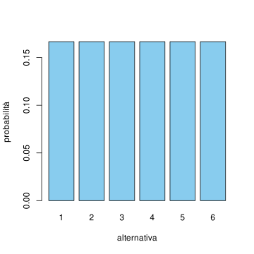
Questa è sicuramente la densità discreta più semplice – ma ha un nome complicato da ricordare! È la densità associata ad un qualsiasi sistema di due sole alternative, ossia \(A_1\) e la sua negazione “non \(A_1\)”, che si indica tradizionalmente questo caso con \(A_0\). È sufficiente indicare quindi il valore di una sola probabilità, \(p := P(A_1|I)\), poiché di conseguenza \(P(A_0|I) =1 -p\). Il valore \(p \in [0,1]\) è detto parametro della densità Bernoulli. Molte di queste densità notevoli presentano in effetti naturalmente dei parametri (numeri naturali, reali ecc.) che vanno precisati per determinarle completamente – stiamo quindi precisamente descrivendo una famiglia di densità discrete, ciascuna identificata qui dal valore del parametro \(p\).
# Ricordiamo che che il parametro p indica la probabilità dell'alternativa 1 (l'altra invece indicata con 0)
dens_bernoulli_1_3 <- c(2/3, 1/3)
dens_bernoulli_1_2 <- c(1/2, 1/2)
dens_bernoulli_2_3 <- c(1/3, 2/3)
# per fare un singolo grafico costruiamo una matrice a partire dalle densità (ciascuna densità è una riga)
dens_bernoulli_matrice <- matrix( c(dens_bernoulli_1_3, dens_bernoulli_1_2, dens_bernoulli_2_3), nrow=3, byrow=TRUE)
# Plottiamo il diagramma a barre
alternative = c("0", "1")
colori = miei_colori[1:3]
barplot( dens_bernoulli_matrice, beside=TRUE, col=colori, names.arg=alternative, ylab="probabilità", xlab="alternativa")
# Aggiungiamo una legenda
legend('top', fill=colori, legend=c("p=1/3", "p=1/2", "p=2/3"), cex=0.8)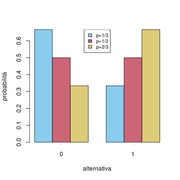
Dato un sistema di alternative \((A_i)_{i=1}^n\), una domanda naturale è di individuare quale sia la più plausibile, sulla base dell’informazione nota \(I\). Si tratta pertanto determinare \(i_{\max}\) tale che \[ P(A_{i_{\max}} |I ) = \max_{i=1, \ldots, n} P(A_{i} |I ),\] ossia \[ i_{\max} \in \operatorname{arg} \max \cur{ P(A_i|I) : i \in \cur{1, \ldots, n}}.\] Nella statistica tale \(i_{\max}\) è detto moda della densità discreta (notiamo che non è necessariamente unica, si pensi al caso di una densità uniforme).
Osservazione. Spesso, per determinare la moda \(i_{\max}\) conviene passare al logaritmo (che essendo una funzione crescente, non cambia il problema) e determinare \[ i_{\max} \in \operatorname{arg} \max \cur{ \log( P(A_i|I) ): i \in \cur{1, \ldots, n}}.\] Se invece si preferisce minimizzare una funzione invece di massimizzarla (molti metodi numerici sono naturalmente implementati per trovare il minimo, non il massimo di una funzione), ovviamente basta cambiare di segno: \[ i_{\max} \in \operatorname{arg} \min \cur{ -\log( P(A_i|I) ): i \in \cur{1, \ldots, n}}.\]
2.3.2 Esercizi
Si consideri la densità discreta \[ p_i \propto i^2 \] per \(i \in \cur{1, \ldots, 10}\). Determinare la costante moltiplicativa e rappresentare la densità tramite un grafico a barre. Calcolarne la moda \(i_{\max}\) e dire se è unica.
Si consideri la densità discreta \[ p_i \propto i^2(5-i)^4\] per \(i \in \cur{1, 2, \ldots, 5}\). Determinare la costante moltiplicativa e rappresentare la densità tramite un grafico a barre. Calcolarne la moda \(i_{\max}\) e dire se è unica.
2.4 Regola del prodotto
Passiamo ora alla seconda regola di calcolo, che afferma, nel caso della congiunzione tra due affermazioni, come la probabilità si ottenga tramite un opportuno prodotto.
Date affermazioni \(A\), \(B\) e l’informazione nota \(I\), vale \[ P( A \text{ e } B | I ) = P( A | I )P(B | A, I). \]
L’interpretazione di questa formula è la seguente: dovendo attribuire il grado di fiducia che entrambe \(A\) e \(B\) siano vere, il robot può calcolare prima la probabilità che \(A\) sia vera e poi, supponendo che anche \(A\) sia vera (e quindi la si aggiunge all’informazione nota \(I\)), calcola la probabilità che sia vera \(B\), e infine moltiplica i due risultati.
Sottointendendo l’informazione \(I\), si trova la scrittura più agevole \[ P( A \text{ e } B ) = P( A )P(B | A ). \]
Osservazione. Dividendo la regola del prodotto per \(P(A|I)\) (supponendo che non sia zero), si trova la formula di Kolmogorov per la probabilità condizionata: \[ P(B|A,I ) = \frac{ P(A \text{ e } B|I )}{P(A|I)}.\]
Questo formula si può interpretare tramite diagrammi: la probabilità di \(B\) condizionata rispetto ad \(A\) si ottiene come area relativa dell’intersezione tra i diagrammi. Condizionando su \(A\) è come se si eliminasse tutto ciò che è al di fuori di \(A\), che quindi diventa il nuovo universo. Chiaramente, bisogna anche dividere per \(P(A)\) per mantenere la normalizzazione \(P(A|A) = 1\) (geometricamente, è come se l’immagine venisse riscalata).
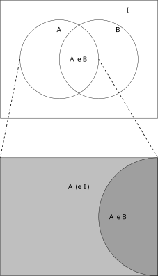
Dalla regola del prodotto, si ottiene la seguente variante della formula di decomposizione, che possiamo chiamare per distiguerla come formula di “disintegrazione” (in inglese nota anche come law of total probability).
Sia \((A_i)_{i=1}^n\) un sistema di alternative rispetto ad una informazione \(I\). Allora, data una affermazione \(B\) (qualsiasi), si può decomporre \[ P(B|I) = \sum_{i=1}^n P(B | A_i, I) P(A_i | I). \]
La dimostrazione a partire dalla formula di decomposizione è immediata: basta osservare che, per ciascun \(i \in \cur{1, \ldots, n}\), vale per la formula del prodotto \[ P(B | A_i, I) P(A_i | I) = P(B, A_i | I). \]
Concludiamo questa sezione notando che per induzione matematica (ossia ripetendo l’applicazione della formula del prodotto), si può ottenere la seguente estensione al caso di \(n\) affermazioni qualsiasi \(B_1\), \(B_2\), … \(B_n\): \[ P( \text{tutte le $B_i$ sono vere}) = P(B_1) P(B_2|B_1) P(B_3| B_1, B_2) \ldots P(B_n |B_1,B_2, \ldots, B_{n-1}).\]
2.4.1 Esercizi
Dedurre la proprietà di monotonia della probabilità dalla regola del prodotto.
Scrivere esplicitamente la regola del prodotto generalizzata nei casi \(n=3, 4, 5\).
2.5 Diagrammi ad albero
La formula di decomposizione combinata con la regola del prodotto e delle sue conseguenze viste nella sezione precedente forniscono (quasi) tutti gli strumenti utili per analizzare problemi di probabilità, riducendoli a problemi più semplici: tutta l’arte sta nell’individuare opportuni sistemi di alternative per cui il robot sia in grado di calcolare agevolmente le varie probabilità condizionate.
È particolarmente utile rappresentare allora l’introduzione di sistemi di sistemi di alternative tramite diagrammi ad albero, ossia di grafi (insiemi di nodi collegati da archi) in cui ogni nodo è etichettato da una affermazione (\(A\), \(B\), \(I\) ecc.) e gli archi sono orientati e pesati con opportune probabilità, costruiti con il seguente algoritmo.
Si introduce un nodo “radice” la cui etichetta è l’informazione iniziale che si evince dal testo del problema (tipicamente si riserva la lettera greca \(\Omega\) (omega) per tale informazione). Succesivamente si itera un numero finito di volte la seguente procedura:
- si considera un nodo del grafo che sia una “foglia”, ossia senza archi uscenti, etichettato da una affermazione \(B\),
- si sceglie un sistema di alternative \((A_i)_{i=1}^n\), e si introducono tanti nodi quante le alternative, etichettate appunto da esse,
- si introducono archi uscenti dalla foglia (\(B\)) verso il nodo corrispondente a ciascuna alternativa (\(A_i\)),
- si pesa ciascun arco introdotto sopra con la probabilità \[P(A_i| B, I),\] dove \(I\) consiste della congiunzione di tutte le affermazioni nell’unico cammino (orientato) che collega l’informazione iniziale \(\Omega\) a \(B\).
Si può mostrare che in questo modo si produce un grafo connesso e senza cicli (detto quindi un albero). Un albero costruito opportunamente può notevolmente semplificare le applicazioni delle regole di calcolo della probabilità.
Consideriamo un esempio più concreto, introducendo il cosiddetto modello delle estrazioni da un’urna. Supponiamo che vi sia una scatola (urna) contenente un certo numero di palline, tra di loro indistinguibili, eccetto che per il colore (che può essere rosso oppure blu). Il robot è informato che l’urna contiene un numero \(N\) palline di cui \(R\) sono rosse e \(B\) blu, con \(N\), \(R\), \(B\) numeri noti (per fissare le idee, potrebbe essere \(R=3\), \(B=2\) e quindi \(N=5\), ma teniamoli qui come parametri, per ottenere delle formule generali). Una persona effettua un certo numero di estrazioni di palline, una dopo l’altra, senza rimpiazzo, ossia una volta tolte le palline e osservate, non vengono rimesse dentro l’urna (vedremo in seguito cosa cambia nel caso con rimpiazzo, ossia se le palline vengono rimesse dentro l’urna).
Indichiamo allora con \(\Omega\) l’informazione iniziale descritta sopra, e supponendo che la persona effettui \(n \le N\) estrazioni (anche qui \(n\) è un parametro noto, ad esempio \(n=2\)), e per ciascuna estrazione \(i =1, \ldots, n\) si introducono le due alternative semplici \[ R^i = \text{l'$i$-esima pallina estratta è rossa},\] \[ B^i = \text{l'$i$-esima pallina estratta è blu}.\] Una domanda naturale, cui il robot deve rispondere, è di calcolare \[P(R^i | \Omega),\] ossia la probabilità di estrarre una pallina rossa all’\(i\)-esima estrazione, senza che sia informato dell’esito di una qualsiasi estrazione.
Il caso \(i=1\) è il più semplice da argomentare: la probabilità che si estragga una pallina rossa dall’urna è \[ P( R^1 | I) = \frac{R}{N}.\] Questo segue dal fatto che l’indistinguibilità delle palline (eccetto per il colore) fa sì che la probabilità di estrarre una pallina qualsiasi è uniforme (e vale \(1/N\)), mentre l’affermazione \(R^1\) si scrive come disgiunzione (unione) tra \(R\) affermazioni (corrispondenti alle \(R\) palline rosse): la regola della somma allora implica la probabilità sopra. Notiamo che questo argomento mette in forma più precisa l’intuizione che la probabilità sia il rapporto tra numero di casi favorevoli (\(R\)) e numero di casi totali (\(N\)), vero solamente se la densità discreta attribuita alle alternative (i “casi”) sia uniforme.
Cosa accade alla seconda estrazione? Viene in aiuto la rappresentazione ad albero descritta sopra. Iniziamo dalla radice \(\Omega\), cui aggiungiamo il primo sistema di alternative \(R^1\), \(B^1\). Osserviamo che le probabilità indicate sopra ciascun arco uscente (verso destra) sommano ad \(1\), proprio perché è un sistema di alternative.
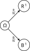
Concentriamoci ora sul calcolo di \(P(R^2 | \Omega)\), e decomponiamo ciascuna foglia (i nodi più a destra) rispetto al sistema di alternative \(R^2\), \(B^2\). Come determinare i pesi dati dalle probabilità \(P(R^2 | R^1)\), \(P(R^2 | B^1)\) ecc.? Possiamo argomentare così: se ad esempio si aggiunge l’informazione \(R^1\), significa che prima della seconda estrazione il robot sa che l’urna contiene \(R-1\) palline rosse e \(B\) blu. Dovendo usare solo questa informazione, segue usando una sottostante probabilità uniforme che \[ P(R^2 | R^1) = \frac{R-1}{N-1},\] e similmente per gli altri casi.
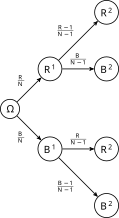
Possiamo calcolare quindi la probabilità \(P(R^2|\Omega)\). Usando la formula di disintegrazione, troviamo (omettiamo \(\Omega\) per semplicità) \[ \begin{split} P(R^2 ) & = P(R^2 | R^1) P(R^1) + P(R^2 | B^1) P(B^1) \\ & = \frac{R-1}{N-1} \cdot \frac R N + \frac{R}{N-1}\cdot \frac{B}{N-1} = \frac R N.\end{split}\] Possiamo allora ritrovare lo stesso risultato direttamente sfruttando l’albero, nel seguente modo:
- per ciascun cammino (“ramo”) che collega il nodo \(\Omega\) ad una foglia corrispondente all’evento \(R^2\), si determina la probabilità ottenuta moltiplicando i pesi corrispondenti agli archi percorsi,
- si sommano tutte le probabilità così ottenute.
Nell’esempio, abbiamo due soli rami e si trova esattamente la stessa formula per la probabilità di \(R^2\).
Ma possiamo anche fare di più, una volta decomposto un problema in un albero abbastanza dettagliato, possiamo calcolare la probabilità di una qualsiasi affermazione \(C\) (in questo caso, riguardante le prime due estrazioni). Basta infatti aggiungere un nodo etichettato con l’evento \(C\) a ciascuna foglia dell’albero già costruito (con un arco pesato con la probabilità condizionata, come nell’algoritmo di costruzione dell’albero) e calcolare la probabilità con lo stesso metodo, ossia sommando le probabilità corrispondenti a ciascun ramo, partendo dalla radice fino a \(C\). Ad esempio, sia \[ C = \text{nelle prime due estrazioni si estraggono due palline dello stesso colore}.\] Aggiungiamo \(C\) all’albero nel seguente modo.
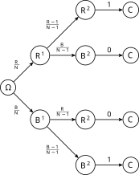
Calcolando la probabilità di ciascun ramo (notiamo che due hanno un peso nullo, quindi possiamo trascurarli) e sommando su tutti i rami, troviamo quindi che \[ P(C) = \frac{R}N \cdot \frac{R-1}{N-1} + \frac B N \cdot \frac{B-1}{N-1}.\]
La validità di questa tecnica si estende ad alberi arbitrariamente complessi, purché si faccia attenzione a due aspetti fondamentali quando, a partire da una foglia, si introduce un sistema di alternative:
- tutte le alternative vanno inserite (eccetto quelle trascurabili, che possono essere tralasciate)
- i pesi degli archi inseriti sono probabilità condizionate rispetto a tutta l’informazione complessiva dalla foglia fino alla radice.
Un controllo da fare per evitare l’errore comune di tralasciare qualche alternativa è di verificare che la somma delle probabilità sugli archi uscenti da ciascun nodo sia sempre \(1\).
Osserviamo infine che non è necessario, come negli esempi visti, che l’albero sia ottenuto usando lo stesso sistema di alternative ad ogni passo della costruzione: a partire da una foglia siamo liberi di scegliere se proseguire con la costruzione e, nel caso, un sistema di alternative che riteniamo utile. Bisogna infatti bilanciare tra la necessità di creare un diagramma sufficientemente dettagliato e d’altra parte non introdurre troppe ramificazioni, che rendono i calcoli complicati con il rischio di perdere qualche termine nel corso della risoluzione.
Ad esempio, se è richiesta la probabilità di \[ D = \text{si estrae almeno una pallina blu nelle prime tre estrazioni},\] possiamo creare un albero in cui interrompiamo la costruzione nelle foglie in cui una pallina blu è estratta:
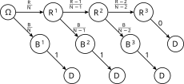
Otteniamo quindi \[ P(D ) = \frac B N + \frac{R} N \cdot \frac {B}{N-1} + \frac R N \cdot \frac {R-1}{N-1}\cdot \frac{B}{N-2}.\] Concludiamo osservando che il modello delle estrazioni senza rimpiazzo è abbastanza semplice per poter ottenere molte formule esplicite per la probabilità di affermazioni interessanti. Ad esempio, tramite un uso ripetuto della regola del prodotto, si ottiene che la probabilità (rispetto all’informazione inizale \(\Omega\)) di estrarre una precisa sequenza ordinata di \(n \le N\) palline colorate, di cui \(r \le R\) sono rosse e le rimanenti \(b \le B\) sono blu è data dalla formula \[ \frac{R(R-1)\cdot \ldots \cdot (R-r+1) \cdot B(B-1) \cdot \ldots \cdot (B-b+1)}{N(N-1)\cdot \ldots (N-n+1)}.\] Ad esempio, \[ P( R^1, B^2, R^3, B^4, R^5, B^6 ) = \frac{ R(R-1)(R-2)B(B-1)(B-2)}{N(N-1)(N-2)(N-3)(N-4)(N-5)}.\] In particolare, la probabilità non dipende dall’ordine in cui le palline rosse e blu vengono estratte nella precisa sequenza. Perciò, grazie alla regola della somma, possiamo anche ottenere la probabilità di estrarre una qualsiasi sequenza di \(n \le N\) palline, di cui \(r \le R\) rosse e le rimanenti \(n-r=b \le B\) sono blu: si tratta di moltiplicare la probabilità di ottenere una di queste (ad esempio quella in cui si estraggono prima \(r\) rosse e poi \(b\) blu) per il numero totale di tali sequenze. Tale numero, è detto coefficiente binomiale e si scrive \[ {n \choose r} = \frac{n(n-1) \cdot \ldots \cdot (n-r+1)}{r (r-1) \cdot\ldots \cdot 1} = \frac{ n!}{r! (n-r)!},\] dove nell’ultima espressione abbiamo usato la funzione fattoriale \[ k! = k(k-1)\cdot \ldots \cdot 1.\]
Con semplici passaggi algebrici, si ottiene una formula piuttosto elegante, che usa solamente opportuni coefficienti binomiali: \[ P( \text{si estrae una qualsiasi sequenza con $r$ rosse e $b$ blu} | \Omega) = \frac{{R \choose r} {B \choose b}}{ {N \choose n}}.\] Osserviamo che, fissata la lunghezza \(n\), al variare di \(r \in \cur{0, \ldots, n}\), le affermazioni \(A_r =\) “si estrae una qualsiasi sequenza con \(r\) rosse e \(b\) blu”, costituiscono un sistema di alternative. La formula è quindi la densità discreta di alternative (rispetto all’informazione iniziale \(\Omega\)) ed è detta per ragioni storiche densità ipergeometrica.
2.5.1 Esercizi
Tracciare un grafico a barre della densità ipergeometrica per i parametri \(N=10\), \(R= 5\) ed \(n=6\), e determinarne la moda (si consiglia di usare il comando dhyper()).
Vi sono due urne dall’esterno indistinguibili, ciascuna contenente \(3\) palline: la prima contiene \(1\) pallina rossa e due blu, la seconda \(2\) rosse e una blu. Si sceglie a caso un’urna tra le due e si estrae una pallina. Quale probabilità il robot attribuisce all’evento \(R^1\)? e all’evento “\(R^1 \text{ e } R^2\)”?
2.6 Formula di Bayes
Una conseguenza elementare della regola della somma è che, essendo “\(A\) e \(B\)” logicamente equivalente a “\(B\) e \(A\)”, si può anche scrivere (omettendo \(I\) per semplicità di notazione) \[ P( B ) P(A|B) = P(B \text{ e } A ) = P(A \text{ e } B) = P(A) P(B|A). \tag{2.2}\]
Da questa semplice osservazione, dividendo per \(P(B)\) (supponendo che non sia zero) segue una delle formule più importanti, ma anche discusse e misinterpretate, del calcolo delle probabilità: la formula di Bayes.
Date affermazioni \(A\), \(B\) e l’informazione nota \(I\), vale \[ P( A | B, I ) = P(A | I ) \frac{ P(B | A,I)}{P(B|I)}\] (purché \(P(B|I)>0\)).
L’intepretazione della formula, apparentemente banale, è centrale. Supponiamo che sia richiesto al robot di calcolare come l’acquisizione di nuova informazione \(B\), oltre a quella già nota \(I\), cambi il grado di fiducia nella validità di una affermazione \(A\). Allora la formula di Bayes prescrive di aggiornare la probabilità (a volte detta a priori) \(P(A|I)\) moltiplicandola per il rapporto \[ \frac{ P(B | A,I)}{P(B|I)}. \tag{2.3}\] La probabilità \(P(A|B,I)\) è detta anche a posteriori (ossia dopo aver incluso l’informazione \(B\)). Teniamo presente però che la distinzione a priori e a posteriori è solamente nel momento in cui si applica la formula di Bayes, perché la probabilità a posteriori \(P(A|B,I)\) a sua volta può diventare a priori se si vuole includere ulteriore informazione \(C\), e calcolare \(P(A|C,B,I)\), e così via.
Il numeratore nel rapporto Equazione 2.3, ossia il termine \[ P(B|A,I)\] è detto verosimiglianza (in inglese likelihood) di \(A\) rispetto a \(B\) (condizionata ad \(I\)) e si indica tradizionalmente con la lettera \(L\) (eventualmente corsivo \(\mathcal{L}\)). Noi useremo la notazione \[L(A; B) = P(B|A),\] tralasciando di specificare \(I\), oppure \(L(A,I;B)\) se vogliamo indicarla. La verosimiglianza di \(A\) rispetto a \(B\) è quindi definita come la probabilità di \(B\) sapendo \(A\), e non è un concetto nuovo, solamente una notazione in cui privilegiamo il ruolo \(A\) rispetto a \(B\).
Il rapporto Equazione 2.3 che nella formula di Bayes moltiplica la probabilità a priori (ossia rispetto ad \(I\)) può essere maggiore, minore o uguale ad \(1\), e indica quanto il grado di fiducia in \(B\) cambia se aggiungiamo invece l’informazione \(A\) – qualitativamente, un rapporto maggiore di \(1\) indica che \(A\) è un “indizio” a favore della validità di \(B\). La formula di Bayes allora permette di scambiare i ruoli di \(A\) e \(B\), un po’ come se invertissimo l’ipotesi con la tesi in un teorema: mentre questa operazione nella logica deduttiva non è ammessa2, nel calcolo delle probabilità è possibile e anche molto utile, proprio perché a volte è più facile ragionare scambiando i ruoli!
Osservazione. Consideriamo l’affermazione “se piove, allora porto l’ombrello”. Scambiando ipotesi con tesi si ottiene “se porto l’ombrello, allora piove”. Siccome ci tengo molto a non bagnarmi, la prima versione è vera, ma la seconda non lo è necessariamente – capita a volte che porti l’ombrello per eccessiva precauzione. Però una persona, incontrandomi in un corridoio mentre porto l’ombrello, è portata a pensare che fuori stia piovendo. Per molti versi la formula di Bayes è più vicina al ragionamento di buon senso che applichiamo quotidianamente, invece della mera deduzione logica.
2.6.1 Esercizi
Si effettuano \(2\) estrazioni senza rimpiazzo da un’urna con \(N\) palline, di cui \(R\) rosse e le rimanenti \(B\) blu (supporre che siano parametri noti). Sapendo che la seconda estrazione è rossa, calcolare la probabilità che la prima estrazione sia pure rossa.
Mostrare la seguente estensione della formula di Bayes: date affermazioni \(A\), \(B\), \(I\) e \(J\), vale \[ P( A, J | B, I) = P(A | I) \cdot \frac{ P(B, J | A, I)}{P(B|I)}.\] Questa formula permette di scambiare “parzialmente” i ruoli dell’informazione nota e dell’affermazione di cui si richiede la probabilità.
2.7 Statistica bayesiana
Dato un sistema di alternative \((A_i)_{i=1}^n\) (rispetto ad una informazione \(I\) che qui sottointendiamo per alleggerire la notazione) e una qualsiasi affermazione \(B\), possiamo applicare la formula di Bayes a ciascuna alternativa e ottenere \[ P(A_i | B ) = P(A_i) P(B | A_i ) \cdot \frac{1}{P(B)}, \tag{2.4}\] dove abbiamo messo in evidenza il denominatore \(P(B)\) per due ragioni. Da un lato, possiamo calcolarlo sempre tramite lo stesso sistema di alternative e la formula di disintegrazione, ossia \[ P(B) = \sum_{i=1}^n P(A_i) P(B | A_i ).\] Questa identità permette di ottenere una formula esplicita per la densità discreta del sistema di alternative, rispetto alla nuova informazione che include \(B\) (oltre ad \(I\)).
D’altra parte, non è neppure necessario usare la formula di disintegrazione per calcolare \(P(B)\) perché, osservando la formula Equazione 2.4, il membro a sinistra definisce la densità discreta associata al sistema di alternative \((A_i)_{i=1}^n\) rispetto alla nuova informazione che include \(B\) oltre ad \(I\). Perciò, possiamo sempre indicarlo a meno di una costante moltiplicativa comune (in questo caso appunto \(P(B)\)): \[ P(A_i | B ) \propto P(A_i) P(B | A_i ) = P(A_i)L(A_i;B), \tag{2.5}\] avendo usato la verosimiglianza nella seconda espressione. La probabilità di ciascuna alternativa rispetto alla nuova informazione \(B\) è dunque ottenuta moltiplicando la probabilità iniziale per la verosimiglianza associata. Ovviamente imponendo che la somma delle probabilità sia \(1\) si trova la stessa formula per \(P(B)\), o equivalentemente usando la notazione per la verosimiglianza \[ P(B) = \sum_{i=1}^n P(A_i) L(A_i; B).\]
È quindi utile riconoscere che il denominatore \(P(B)\) ha un ruolo secondario, e volendo si può tenere a mente solo la versione (Equazione 2.5) della formula. Un altra ragione per non concentrarsi troppo sul denominatore comune \(P(B)\) è perché spesso non si richiede di determinare quanto sia probabile ciascuna alternativa \(A_i\), rispetto alla nuova informazione \(B\), ma semplicemente ci si limita a determinare quale sia l’alternativa più probabile della nuova densità discreta \((P(A_i|B))_{i=1}^n\). Abbiamo introdotto in precedenza il termine statistico moda, ma nel contesto della formula di Bayes è detta stima del massimo a posteriori (in inglese maximum a posteriori probability estimate, MAP). Per calcolare tale \(i_{\map} \in \cur{1, \ldots n}\), possiamo quindi tralasciare costanti moltiplicative (positive) e allora vale \[ i_{\map} \in \operatorname{arg} \max\cur{ P(A_i) P(B | A_i )\, : \, i \in \cur{1, \ldots, n} }, \] oppure, usando la notazione della verosimiglianza, \[ i_{\map} \in \operatorname{arg} \max\cur{ P(A_i) L( A_i ;B )\, : \, i \in \cur{1, \ldots, n} }, \] dove ricordiamo che il simbolo di appartenenza (\(\in\)) è perché potrebbero esserci più indici che raggiungono il massimo.
Osservazione (massima verosimiglianza). Nel caso speciale in cui la densità discreta a priori sia uniforme, ossia \(P(A_i) \propto 1\), si può ridurre ulteriormente il problema di massimizzare \(P(A_i) P(B | A_i )\) alla semplice massimizzazione della verosimiglianza \(P(B| A_i)=L(A_i;B)\). Tale approccio, molto utilizzato in pratica perché spesso non si è in grado di precisare densità a priori non uniformi, è detto stima di massima verosimiglianza (in inglese maximum likelihood estimation, MLE): dato un sistema di alternative \((A_i)_{i=1}^n\) e una affermazione \(B\), avendo osservato \(B\) si determina \(i_{\mle}\) tale che \[ L(A_{i_{\mle}}; B) = \max_{i=1, \ldots, n}L(A_i; B).\] Questo metodo si può presentare anche senza la formula di Bayes, ma alla luce di questa ne abbiamo una giustificazione in termini del calcolo delle probabilità, e anche una sua estensione al caso in cui le probabilità a priori non siano uniformi.
Osservazione (passaggio al logaritmo). Ricordando che è possibile anche passare al logaritmo per determinare la moda, si può quindi determinare \[ i_{\map} \in \operatorname{arg} \max\cur{ \log( P(A_i)) + \log( L( A_i ;B ))\, : \, i \in \cur{1, \ldots, n} }, \] che nel caso di densità a priori uniforme si ridure a massimizzare la \(\log\)-verosimiglianza (\(\log\)-likelihood in inglese) \(\log( L(A_i; B))\) sulle possibili alternative \((A_i)_{i\in I}\).
Vediamo in pratica un esempio dal modello delle estrazioni senza rimpiazzo dall’urna. Questa volta, il robot non è inizialmente informato sul numero di palline rosse contenute, ma solamente sul numero totale \(N=3\). Dopo un’estrazione, si aggiorna il robot con l’informazione \(R^1\), ossia che una pallina rossa è stata estratta. Cosa può dedurre circa il contenuto dell’urna? Usando il calcolo delle probabilità sviluppato finora e in particolare la formula di Bayes, diamo una risposta (questo modo di procedere è detto anche statistica Bayesiana).
Introduciamo un sistema di alternative relativo al contenuto dell’urna: \[ A_i = \text{l'urna contiene $R=i$ palline rosse}, \] per \(i \in \cur{0,1, 2, 3}\). Prima di poter applicare la formula di Bayes, il robot deve stabilire la densità discreta associata al sistema rispetto all’informazione inizale (la probabilità a priori). È chiaro che potrebbero esserci molteplici scelte, ma non avendo ragioni per favorire una alternativa rispetto all’altra, questa è proprio una situazione in cui usare la densità discreta uniforme. Pertanto, indicando con \(\Omega\) l’informazione iniziale, per ciascun \(i\in \cur{0,1,2,3}\), il robot pone \[ P(A_i | \Omega) = \frac 1 4.\] Successivamente, il robot calcola la probabilità condizionata (il problema conoscendo il numero di palline rosse e blu è già stato affrontato nella sezione precedente) \[ P( R^1 | A_i) = \frac{i}{3},\] e conclude, usando la formula di Bayes \[ P(A_i | R^1 ) = \frac{1}{4} \cdot \frac{i}{3} \cdot \frac{1}{P(R^1|\Omega)} \propto i.\] Anche senza calcolare \(P(R^1|\Omega)\), si vede subito che l’alternativa più probabile è \(i_{\max} = 3\), ossia l’urna contiene solo palline rosse – questa è anche la risposta mediante massima verosimglianza. Osserviamo anche un fatto banale, ma che ci rassicura: vale \(P(A_0 | R^1) = 0\), perché il robot è ora certo che vi sia almeno una pallina rossa.
Possiamo confrontare la densità discreta con un grafico a barre:
# Calcoliamo vettori delle densità a priori e dopo aver osservato R^1
(dens_apriori <-rep(1/4, 4))[1] 0.25 0.25 0.25 0.25dens_R1 <- 0:3
(dens_R1 <- dens_R1/sum(dens_R1))[1] 0.0000000 0.1666667 0.3333333 0.5000000# Per il grafico a barre vanno inseriti in una matrice
dens_matrice <- matrix( c(dens_apriori, dens_R1), nrow=2, byrow=TRUE)
# Alcuni parametri per il grafico e il comando barplot()
alternative <- as.character(0:3)
colori <- miei_colori[1:2]
barplot(dens_matrice, beside = TRUE, col=colori, names.arg = alternative, ylab="probabilità", xlab="alternativa")
# Aggiungiamo infine una legenda
legend('top',fill=colori,legend=c('A priori','Sapendo R^1'), cex = 0.8)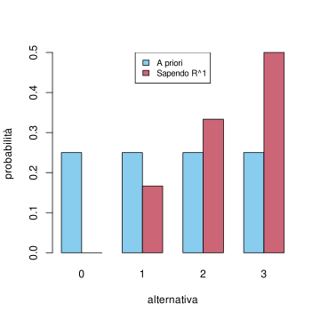
Osservazione (decisioni e test statistici). Dopo aver osservato \(R^1\) e determinato l’alternativa più probabile, in questo caso \(A_3\), ossia l’urna contiene solo palline rosse, si può affermare con abbastanza sicurezza che la realtà sia proprio questa? L’approccio di massima verosimiglianza darebbe appunto questa indicazione, ma è ovvio in questo caso che, essendo la probabilità \(P(A_3|R^1) = 1/2\), l’incertezza è ancora grande.
Nella pratica, il calcolo delle probabilità serve spesso appunto a valutare l’incertezza sugli effetti di intraprendere determinate iniziative e indicare quindi quali decisioni mettere in pratica. Almeno una volta nella vita avremo guardato le previsioni del tempo e sulla base della probabilità che piova abbiamo stabilito se organizzare un’uscita nel fine settimana. Una decisione in ogni caso realistico è basata su molti altri aspetti, oltre al fatto che l’alternativa sia la più probabile: esiste una intera teoria della decisione che si occupa di questo problema, specialmente dal punto di vista economico/utilitario.
Un punto di vista analogo, ma tradizionalmente legato al metodo scientifico di alcune discipline, è fornito dalla teoria dei test statistici: le alternative \(A_i\) sono pensate come “ipotesi” e sulla base delle osservazioni si decide quali siano confutate/falsificate e pertanto vadano scartate (il termite tecnico è rifiutate). Le rimanenti ipotesi sono quindi “accettate”, ma sempre con il beneficio del dubbio, nello stesso senso in cui una teoria scientifica rimane valida fintanto che non si trova un esperimento che ci indichi che qualcosa non va e pertanto debba essere modificata.
Tecnicamente, nei test statistici le alternative vengono collezionate in due sottoinsiemi disgiunti, detti rispettivamente l’ipotesi nulla (e indicato con \(\mathcal{H}_0\)) e l’alternativa (indicato con \(\mathcal{H}_1\)). L’attenzione principale è rivolta a rifiutare l’ipotesi nulla, ossia scartare tutte le alternative \(A_i \in \mathcal{H}_0\) (questa è in un certo senso la decisione da prendere o meno sulla base della evidenza \(B\)). Se si osserva che \(B\) vale, si decide di rifiutare l’ipotesi nulla se la probabilità che \(B\) sia vero, condizionata a una qualsiasi \(A_i\) tra quelle dell’ipotesi nulla \(\mathcal{H}_0\) è troppo bassa. Si stabilisce quindi una soglia (detto tecnicamente livello di significatività del test, spesso indicato con \(\alpha \in (0,1)\)) sotto la quale si ritiene troppo poco probabile che \(B\) possa essere vero se vale una qualsiasi \(A_i\) dell’ipotesi nulla, e quindi \(\mathcal{H}_0\) va scartato, a favore di \(\mathcal{H}_1\). La quantità centrale della teoria dei test statistici è quindi il valore \(p\) (in inglese \(p\)-value) introdotto da Fisher, definito (con la nostra notazione), come \[ p = \max_{A_i \in \mathcal{H}_0} P(B | A_i) = \max_{A_i \in \mathcal{H}_0} L(A_i; B).\] Se \(p\) è minore del livello di significatività \(\alpha\), significa che assumendo una qualsiasi \(A_i\) tra quelli dell’ipotesi nulla \(\mathcal{H}_0\), la probabilità che \(B\) sia vero è comunque minore di \(\alpha\), e quindi se si osserva \(B\) si decide di rifiutare \(\mathcal{H}_0\). Più piccolo è il valore \(p\), minore è la probabilità che \(B\) sia vero rispetto a l’ipotesi \(\mathcal{H}_0\), e quindi saremo più sicuri nel rifiutarla.
Osserviamo però che con questo metodo non ci si domanda quanto \(B\) fosse probabile se si assume una \(A_i\) tra quelle delle \(\mathcal{H}_1\): si potrebbe criticare quindi che l’ipotesi venga scartata semplicemente perché \(B\) è sempre poco probabile (ma comunque la decisione interviene solo se lo si è osservato nella realtà). Una ulteriore critica è che, per determinare il valore \(p\), bisognerebbe considerare la probabilità \(P(A_i |B)\), e non la verosimiglianza \(P(B|A_i) = L(A_i; B)\), perché non necessariamente tutte le ipotesi a priori sono ugualmente probabili. Ovviamente vi sono ulteriori tecniche per mitigare i possibili usi errati della teoria dei test statistici che sorgono dalle osservazioni critiche sopra. Quello dei test rimane sicuramente uno strumento importante, ma spesso poco compreso (e a volte usato erroneamente).
Torniamo all’esempio dell’urna, e chiediamoci cosa deduce il robot se viene informato che alla seconda estrazione (senza rimpiazzo) la pallina estratta è blu. Si tratta allora di condizionare anche rispetto a \(B^2\). Notiamo che non serve tornare alla densità iniziale (uniforme), ma basta usare come nuova densità a priori la densità discreta rispetto all’informazione \(R^1\), e si trova \[ P(A_i | R^1,B^2 ) = P(A_i|R^1) P(B^2 | R^1,A_i) \cdot \frac{1}{P(B^2|R^1)}.\] Se vale \(A_i\), allora sapendo \(R^1\) ci sono due palline nell’urna, di cui \(3-i\) blu (purché \(i \neq 0\)), quindi \[P(B^2 |R^1, A_i) = \frac{3-i}{2}.\] Si ottiene allora che \[ P(A_i|R^1, B^2) \propto i (3-i)\] e quindi la probabilità rilusta uniforme, ma solamente sulle alternative \(A_1\), \(A_2\) (d’altra parte \(A_0\) e \(A_3\) sono diventate trascurabili). Possiamo anche confrontarle in un grafico a barre.
# La "nuova" densità a priori è quella ottenuta prima, avendo osservato R^1, perciò basta definire la densità avendo osservato anche B^2
dens_B2_R1 <- dens_R1 * 3:0
(dens_B2_R1 <- dens_B2_R1/sum(dens_B2_R1))[1] 0.0 0.5 0.5 0.0# Per il grafico a barre le inseriamo tutte in una matrice
dens_matrice <- matrix( c(dens_apriori, dens_R1, dens_B2_R1), nrow=3, byrow=TRUE)
# Alcuni parametri per il grafico e il comando barplot()
alternative <- as.character(0:3)
colori <- miei_colori[1:3]
barplot(dens_matrice, beside = TRUE, col=colori, names.arg = alternative, ylab="probabilità", xlab="alternativa")
# Legenda
legend('topleft',fill=colori,legend=c("A priori","Sapendo R^1", "Sapendo R^1 e B^2"), cex = 0.8)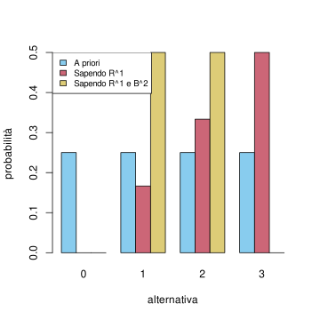
È ovvio ma interessante comunque osservare come l’alternativa \(A_3\), che dopo la prima estrazione era la più probabile, ora è trascurabile. Inoltre il robot risulta completamente indeciso tra l’alternativa \(A_1\) e l’alternativa \(A_2\). Aggiungere informazione in questo caso ha aumentato la sua incertezza, e non rimane che effettuare l’ultima estrazione per scoprire quale sia il colore della terza pallina!
2.7.1 Esercizi
Cosa accade nell’esempio sopra se il robot viene informato che le prime due estrazioni sono invece \(R^1\), \(R^2\)? calcolare le probabilità e confrontare visivamente le densità discrete ottenute mediante grafici a barre.
Calcolare e plottare una variante dell’esempio sopra in cui \(N=6\), inizialmente il robot non sa quante palline rosse vi siano e si informa poi che nelle prime \(3\) estrazioni le palline estratte sono tutte dello stesso colore (ma non si specifica quale).
2.8 Indipendenza probabilistica
Nella formula di Bayes vi è una certa simmetria, nel senso che il ruolo di \(A\) e \(B\) può essere scambiato. Per metterla di più in evidenza, notiamo che dividendo per il prodotto \(P(A)P(B)\) (assumendo che sia positivo) l’equazione Equazione 2.2, otteniamo \[ \frac{ P(A | B )}{P(A)} = \frac{P(A, B)}{P(A)P(B)} = \frac{ P(B | A )}{P(B)}. \] (evitiamo per semplicità di scrivere \(I\)). In particolare, se scambiamo \(A\) con \(B\) il rapporto che va a moltiplicare la probabilità a priori nella formula di Bayes non cambia. Qualitativamente, \(A\) è un indizio a favore della validità di \(B\) (ossia il rapporto è maggiore di \(1\)) se e solo se \(B\) lo è per \(A\), e analogamente se il rapporto è minore di \(1\). Se il rapporto è proprio uguale ad \(1\) significa che il grado di fiducia della validità di \(A\), pur sapendo l’informazione aggiuntiva \(B\), non cambia (rispetto a non sapere \(B\)). Tale concetto prende il nome di indipendenza probabilistica.
Due affermazioni \(A\), \(B\) si dicono indipendenti (condizionatamente all’informazione nota \(I\)) se \[ P(A| B,I) = P(A | I ) \quad \text{oppure} \quad P(B| A,I) = P(B| I ),\] oppure ancora \[ P(A, B|I) = P(A|I) P(B|I). \]
Il vantaggio dell’ultima identità è che non si divide per \(P(A|I)\) o \(P(B|I)\), quindi non serve l’ipotesi che queste quantità siano non nulle. È certamente anche più semplice da ricordare: si tratta di una regola del prodotto “semplificata”. Sebbene l’indipendenza sia una condizione simmetrica, spesso si dice che \(A\) è indipendente da \(B\) (o viceversa), ma il significato rimane lo stesso.
Osservazione. Un errore ricorrente è di confondere l’incompatibilità tra due affermazioni con l’indipendenza. Si tratta di due concetti estremamente diversi, anzi è facile vedere che se due affermazioni (non trascurabili) sono incompatibili, allora il rapporto \(P(A|B)/P(A)\) è nullo.
Osserviamo che se \(A\), \(B\) sono indipendenti (rispetto ad \(I\), che omettiamo), lo sono anche “non \(A\)” da \(B\), perché \[ P( \text{non $A$} | B) = 1- P(A | B) = 1 - P(A) = P( \text{non $A$}). \] Sfruttando poi la simmetria dell’indipendenza segue che anche “non \(A\)” è indipendente da “non \(B\)” e pure \(A\) da “non \(B\)”.
Veniamo ora all’esempio fondamentale di indipendenza, ossia il modello delle estrazioni con rimpiazzo. Informiamo il robot che vi è la solita urna con \(N\) palline di cui \(R\) rosse e \(B\) blu, dove \(N\), \(R\) e \(B\) sono parametri noti. Stavolta, dopo la prima estrazione, la pallina viene osservata e rimessa all’interno dell’urna. Dato che l’operazione è quindi cambiata in questo modo, come calcolare la probabilità di un evento relativo ad una seconda estrazione, ad esempio \(R^2\), sapendo \(R^1\)? Il robot potrebbe immaginare molte situazioni in cui una prima estrazione rossa favorisce una seconda estrazione rossa (ad esempio, viene rimessa in alto e chi estrae preferisce estrarre dall’alto), ma anche altrettante in cui una seconda estrazione rossa è sfavorita. Facendo appello alla razionalità del robot, l’unica conclusione ragionevole è che, pur sapendo \(R^1\), nella seconda estrazione si ha un’urna praticamente identica alla situazione iniziale, con lo stesso numero di palline rosse e blu, e pertanto il robot pone \[ P(R^2 | R^1 ) = \frac{R}{N}.\] Similmente, nel caso condizionato a \(B^1\), \[ P(R^2 | B^1 ) = \frac{R}{N}.\] Completando allora il diagramma ad albero con queste probabilità, si trova che \[P(R^2|\Omega) = \frac{R}{N}\cdot \frac{R}{N} + \frac{B}{N}\cdot \frac{R}{N} = \frac{R}{N},\] ossia \(P(R^2|R^1) = P(R^2)\) e quindi \(R^1\) ed \(R^2\) sono indipendenti (rispetto all’informazione iniziale). Per quanto detto sopra, segue che ogni evento relativo alla prima estrazione (\(R^1\), \(B^1\)) è indipendente da ogni evento relativo alla seconda (\(R^2\), \(B^2\)). Si dice pertanto che le due estrazioni sono indipendenti.
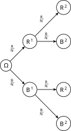
Osservazione. L’indipendenza probabilistica è quindi un’ipotesi che viene inserita, essenzialmente perché non si riesce a proporre di meglio. Se il robot fosse informato che chi estrae ha qualche preferenza, ad esempio tende a ripescare l’ultima pallina estratta, dovrebbe abbandonare l’assunzione di indipendenza. Per molti aspetti, sopratutto matematici e di semplicità di calcolo, l’indipendenza è utile, ma forse tradizionalmente viene posta troppa attenzione su questo concetto, dando l’impressione che senza indipendenza non si possa fare molto. Ma in realtà è vero l’opposto: l’apprendimento dalle osservazioni non potrebbe avere luogo se vi fosse solo indipendenza, perché la formula di Bayes darebbe sempre che le probabilità a priori non cambiano mai!
Tornando alle estrazioni, come può ragionare il robot alla terza (avendo rimesso nell’urna anche la seconda pallina estratta)? È naturale imporre che, qualsiasi informazione \(J\) esso ottenga dalle prime due estrazioni (ad esempio \(J = (R^1, R^2)\)), si avrà comunque che \[ P(R^3 | J) = \frac{R}{N}.\] Possiamo allora costruire il diagramma ad albero e ottenere con semplici calcoli che, anche in questo caso, \[ P(R^3 ) = \frac R N,\] (avendo omesso di indicare l’informazione iniziale \(\Omega\)). Pertanto, qualsiasi informazione sulle prime due estrazioni non cambia il grado di fiducia sulla terza (lo stesso discorso vale anche per \(B^3\)). Si può anche mostrare che, se il robot acquisisce dell’informazione relativa a due qualsiasi estrazioni, la probabilità di un evento relativo alla rimanente estrazione (delle prime tre) non cambia. Ad esempio, \[ P(R^1 | B^2, R^3) = \frac{R}{N} = P(R^1).\] Inoltre, usando la regola del prodotto, otteniamo che \[ P(R^1, B^2, R^3) = P(R^1) P(B^2 ) P(R^3 )\] Questo fatto, che deve valere per ogni possibile scelta di eventi dai tre sistemi di alternative relativi alle estrazioni, ci permette di intuire come generalizzare il concetto di indipendenza da due a tre o più eventi. È in realtà più semplice definire direttamente l’indipendenza tra sistemi di alternative. Per ora diamo la seguente definizione, che riprenderemo usando il linguaggio delle variabili aleatorie nel prossimo capitolo.
Dati \(k \ge 2\) sistemi di alternative \(\mathcal{S}_1\), \(\mathcal{S}_2\), … \(\mathcal{S}_k\), essi si dicono indipendenti tra loro (rispetto all’informazione \(I\)) se \[ P( A^1, A^2, \ldots, A^k | I) = \prod_{i=1}^n P(A^i|I), \] per ogni scelta di \(A^1 \in \mathcal{S}_1\), \(A^2 \in \mathcal{S}_2\), … \(A^k \in \mathcal{S}_k\).
Tornando all’esempio delle estrazioni con rimpiazzo, il robot supporrà allora che i sistemi di alternative \(\mathcal{S}_i = \cur{R^i, B^i}\) relativi alle diverse estrazioni \(i=1, 2, \ldots\) siano tra loro indipendenti. Possiamo allora chiedere, come nel caso delle estrazioni senza rimpiazzo, quale sia la probabilità di osservare una specifica sequenza ordinata lunga \(n\) di palline, di cui \(r\) rosse e \(b\) blu. Notiamo che la sequenza può essere arbitrariamente lunga, perché l’urna non si svuota mai. Usando la regola del prodotto e l’indipendenza, si trova anche in questo caso che la probabilità non dipende dall’ordine in cui i colori vengono osservati e, rispetto al caso senza rimpiazzo, ha un’espressione anche più semplice: \[ \bra{\frac{R}N}^r \bra{ \frac B N}^b = \bra{\frac{R}N}^r \bra{ 1- \frac R N}^{n-r},\] avendo usato che \(B/N = 1-R/N\) e \(b = n-r\). Per semplificare ulteriormente tare probabilità, si pone \(p = R/N \in [0,1]\) la probabilità di estrarre una pallina rossa, e si trova \[ p^r (1-p)^{n-r}.\] Come nel caso delle estrazioni senza rimpiazzo, se chiediamo invece al robot la probabilità di estrarre una qualsiasi sequenza ordinata lunga \(n\) e contenente \(r\) palline rosse, basta moltiplicare la probabilità di una specifica sequenza per il coefficiente binomiale (che conta il numero di tali sequenze). Si trova quindi \[ P( \text{si estrae con rimpiazzo una sequenza lunga $n$ con $r$ rosse} ) = {n \choose r} p^r (1-p)^{n-r}.\] che definisce una nuova densità discreta sulle \(n+1\) alternative, al variare di \(r \in \cur{0, \ldots, n}\). Essa è nota come densita binomiale con parametri \(n\) (numero di estrazioni), \(p \in [0,1]\) (frazione di palline rosse). Tale formula è particolarmente ricorrente in tutte le situazioni in cui vi siano \(n\) “esperimenti” ripetuti e si chieda il numero di “successi” (nel nostro caso, estrarre una pallina rossa), sotto l’ipotesi che tutti gli esperimenti siano tra loro indipendenti e la probabilità di successo per ciascun esperimento sia uguale a \(p\).
# Usiamo la funzione dbinom() per ottenere direttamente la densità binomiale con i parametri cercati
n <- 6
r <- 0:6
dens_1_3 <- dbinom(r, n, 1/3)
dens_1_2 <- dbinom(r, n, 1/2)
dens_2_3 <- dbinom(r, n, 2/3)
dens_matrice <- matrix( c(dens_1_3, dens_1_2, dens_2_3), nrow =3, byrow=TRUE)
# Grafico a barre e legenda
alternative <- as.character(r)
colori <- miei_colori[1:3]
barplot( dens_matrice, beside=TRUE, col=colori, names.arg=alternative, ylab="probabilità", xlab="alternativa")
legend('topright', fill=colori, legend=c("p=1/3", "p=1/2", "p=2/3"), cex=0.8)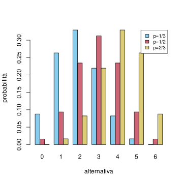
2.8.1 Esercizi
Ripetere l’esempio della Sezione 2.7 nel caso in cui le estrazioni siano effettuate rimpiazzo.
Calcolare la probabilità di non estrarre mai una pallina rossa in \(n=4\) estrazioni da un’urna con \(N=9\) palline di cui \(R=5\) rosse e \(B=4\) blu, nei due casi di estrazioni (con e senza rimpiazzo). In quale caso la probabilità è maggiore? Supponendo che il robot conosca il contenuto dell’urna ma non sappia quale tra le due modalità di estrazione viene svolta, calcolare e rappresentare con un grafico a barre la probabilità che le estrazioni siano senza rimpiazzo, avendo osservato solo palline blu nelle prime \(n\) estrazioni, per \(n=1\), \(n=2\), \(n=3\) de \(n=4\).
2.9 Gli assiomi di Kolmogorov
L’approccio intuitivo alla probabilità, con le sue regole di calcolo, pone diversi problemi, a vari livelli, oltre a quelli accennati all’inizio del capitolo di tipo psicologico-filosofico, ossia sul fatto che il calcolo ben rappresenti un’astrazione del ragionamento razionale in presenza di incertezza.
I problemi tecnici principali che solleva sono i seguenti:
- Come attribuire le probabilità iniziali (quelle che abbiamo chiamato a priori)? In molti casi la scelta di densità uniforme è sembra ragionevole, ma è facile capire che altre situazioni realistiche non lo permettono.
- Come garantire la consistenza del calcolo, ossia che \(P(A|I)\) sia ben definita? Combinando le regole è spesso possibile arrivare ad un risultato tramite passaggi diversi, ma si può dimostrare che tale risultato non dipende da come le regole sono state applicate?
- Come trattare i passaggi al limite, in particolare, nel caso di infinite affermazioni? Questo è particolarmente rilevante nelle applicazioni per poter argomentare in modo rigoroso molte approsimazioni, se in cui gli eventi introdotti sono talmente numerosi da essere intrattabili in modo preciso.
A queste domande, in particolare la seconda e la terza, risponde la descrizione assiomatica della probabilità proposta da Kolmogorov nel 1933.
L’idea principale è di formalizzare i diagrammi di Eulero-Venn, identificando
- le affermazioni \(A\), \(I\) ecc. di interesse con dei veri e propri sottoinsiemi di un insieme “universo” \(\Omega\), che corrisponde alla informazione iniziale,
- la probabilità con una nozione astratta di area del sottoinsieme.
Presentiamo brevemente in qusta sezione gli assiomi proposti da Kolmogorov. L’idea è che, per risolvere un problema concreto, bisognerebbe prima costruire i seguenti oggetti matematici:
Si fissa un insieme “universo” \(\Omega\) che codifica tutte le possibili situazioni (scenari) che si potrebbero presentare. Ad esempio, nel caso di un lancio di dado a sei facce, si pone \[\Omega = \cur{1,2,3,4,5,6},\] che corrisponde ai possibili esiti (ma ovviamente, tante altre scelte sono ragionevoli).
Si identificano quali affermazioni \(A\), ossia quali sottoinsiemi di \(\Omega\), sono potenzialmente interessanti. Si introduce quindi un insieme \(\mathcal{A}\) i cui elementi \(A \in \mathcal{A}\) sono sottoinsiemi di \(\Omega\), detto la \(\sigma\)-algebra degli eventi. L’insieme degli eventi \(\mathcal{A}\) deve comunque almeno contenere l’insieme “universo” \(\Omega\) e, se \(A\), \(B \in \mathcal{A}\) sono eventi, anche \(A^c\) (che corrisponde alla negazione “non \(A\)”) \(A \cap B\) (che corrisponde alla congiunzione “\(A\) e \(B\)”) e \(A \cup B\) (che corrisponde ad “\(A\) oppure \(B\)”) sono eventi, ossia appartengono ad \(\mathcal{A}\).
Inoltre, per permettere di passare al limite, si richede che valga lo stesso per l’unione infinita di eventi: dati \(A_n \in \mathcal{A}\), pure \(\cup_{n=1}^\infty A_n \in \mathcal{A}\).
Nulla vieta di considerare sempre l’insieme che comprende tutti i sottoinsiemi di \(\Omega\), come è naturale nell’esempio del dado. Tuttavia in pratica converrebbe scegliere \(\mathcal{A}\) il più piccolo possibile, purché contenga le risposte del problema che stiamo considerando (vi è poi un altro problema, che non trattiamo, dovuto ad evitare alcuni paradossi matematici nel caso di \(\Omega\) infinito).
- Si definisce una funzione di probabilità \(P: \mathcal{A} \to [0,1]\) tale che \(P(\Omega)= 1\) e, per ogni \(A\), \(B \in \mathcal{A}\) con \(A \cap B = \emptyset\) valga \[ P(A \cup B) = P(A)+ P(B).\] In termini intuitivi, \(P(A)\) corrisponde alla probabilità \(P(A|\Omega)\) rispetto all’informazione iniziale, di cui si richiede valga la regola della somma (per eventi incompatibili).
Per passare al limite, si richiede in più che la regola della somma si estenda ad infiniti eventi \(A_n \in \mathcal{A}\) a due a due incompatibili, per cui, se \(A_n \cap A_m = \emptyset\) per ogni coppia \(n\neq m\), vale \[ P\bra{ \bigcup_{n=1}^\infty A_n } = \sum_{n=1}^\infty P(A_n).\]
Più grande è la famiglia degli eventi \(\mathcal{A}\) introdotta al punto precedente, più difficile sarà la costruzione della probabilità \(P\) e la verifica delle sue proprietà. Per questo nel passo precedente si suggerisce di considerare \(\mathcal{A}\) il più piccolo possibile (ma comunque utile ai fini del problema che si deve risolvere).
- Si definisce infine, per ogni \(A,I \in \mathcal{A}\) tale che \(P(I)>0\), la probabilità condizionata usando appunto la formula di Kolmogorov \[ P(A|I) = \frac{P(A \cap I)}{P(I)}.\] Questa identità, che abbiamo già incontrato come conseguenza della regola del prodotto, ora diventa una definizione (e la regola del prodotto ne diventa una conseguenza).
Gli assiomi terminano qui, e una tripla \((\Omega, \mathcal{A}, P)\) che soddisfa le condizioni sopra è detta spazio di probabilità secondo Kolmogorov.
Gli assiomi di Kolmogorov sono uno strumento importante per lo sviluppo matematico della probabilità, in particolare per i passaggi al limite. Tuttavia, va notato che lasciano completamente irrisolto il primo problema enunciato all’inizio della sezione: come stabilire probabilità a priori in un problema concreto? Per individuare la probabilità a priori si ricorre a diversi principi e strumenti anche non completamente matematici (un esempio, è il principio di massima entropia, che presenteremo nella Sezione 4.8). Va altresì chiarito che l’impostazione di Kolmogorov è in realtà troppo rigida e onerosa nel caso in cui si debba risolvere un problema elementare di probabilità: per questa ragione noi non ne faremo mai un uso esplicito nel corso.
2.9.1 Esercizi
Costruire esplicitamente uno spazio di probabilità \((\Omega, \mathcal{A}, P)\) secondo Kolmogorov che permetta di trattare il modello delle estrazioni con rimpiazzo da un’urna contenente \(N=10\) palline di cui \(R=3\) rosse e le rimanenti blu.
Dato uno spazio di probabilità \((\Omega, \mathcal{A}, P)\) secondo Kolmogorov, dedurre la formula di Bayes dagli assiomi.
2.10 Problemi
Si consideri un test per una certa infezione virale (può trattarsi di un virus attack al computer o di un’infezione umana). Il test è affidabile al \(95\%\) per i pazienti infetti e al \(99\%\) per i pazienti sani. Se la probabilità che un soggetto sia infetto è \(4\%\), qual è il grado di affidabilità del test? In altri termini, se il test da esito positivo, qual è la probabilità che il soggetto sia davvero infetto?
Il \(90\%\) dei voli parte in tempo. L’\(80\%\) dei voli arriva in tempo. Il \(75\%\) parte in tempo e arriva in tempo.
- Attendi un volo che è partito in tempo. Qual è la probabilità che arriverà in tempo?
- Attendi un volo che è arrivato in tempo. Qual è la probabilità che è partito in tempo?
- Sono tali eventi, cioè arrivare e partire in tempo, indipendenti?
Un’urna contiene una pallina blu ed \(R\) palline rosse, di cui però il robot non conosce esattamente il numero. Sa solamente che \(R \in \cur{0,1, \ldots, 10}\).
- Basandosi sull’informazione sopra, quale probabilità attribuisce all’evento \(A_i = \text{``nell'urna sono presenti $i$ palline rosse''}\)?
- Supponiamo che si effettui una prima estrazione dall’urna, e che la palline estratta risulti blu. Come cambia la probabilità degli eventi \(A_i\) se questa informazione viene comunicato al robot?
- Supponiamo che si effettuino due estrazioni dall’urna, con rimpiazzo, e che entrambe le palline risultino blu. Come cambia la probabilità degli eventi \(A_i\) se il robot viene informato di questo evento?
- Supponiamo che qualcuno effettuino \(n\ge1\) estrazioni dall’urna, con rimpiazzo, e tutte le palline estratte risultino blu. Come cambia la probabilità degli eventi \(A_i\)?
(Problema di Monty hall)3 Supponi di partecipare a un gioco a premi, in cui puoi scegliere fra tre porte: dietro una di esse c’è un’automobile, dietro le altre, capre. Scegli una porta, diciamo la numero \(1\), e il conduttore del gioco a premi, che sa cosa si nasconde dietro ciascuna porta, ne apre un’altra, diciamo la \(3\), rivelando una capra. Quindi ti domanda: ``Vorresti scegliere la numero \(2\)?’’ Ti conviene cambiare la tua scelta originale?
si veda l’esempio della fallacia della congiunzione.↩︎
un teorema non rimane vero in generale se scambiamo ipotesi con tesi↩︎